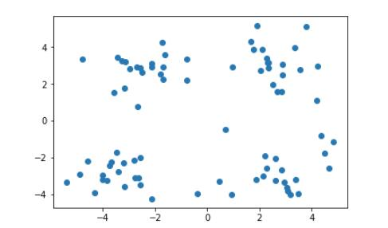
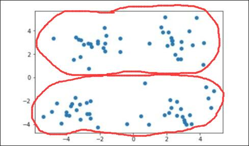
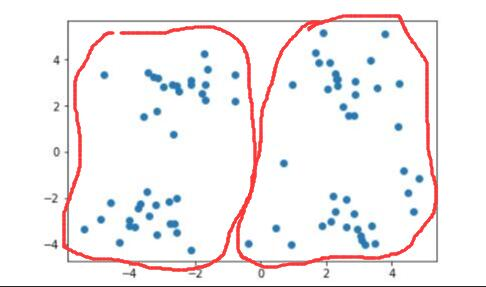
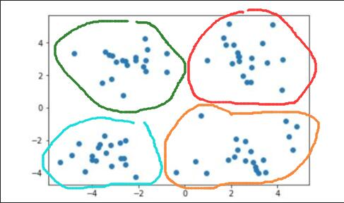

k-means 聚类学习及实现用户分类
文章目录
k-means 聚类算法的学习笔记和在用户分类方面的实战。
一、Clustering
对于 Supervised Learning ，其训练样本是带有标记信息的，并且监督学习的目的是:对标有标记的数据集进行模型学习，从而便于对新的样本进行分类。而在 Unsupervised Learning 中，训练样本的标记信息是未知的，目标是通过对无标记训练样本的学习来揭示数据的内在性质及规律，为进一步的数据分析提供基础。对于无监督学习，应用最广的便是 Clustering。聚类算法就是一种典型的无监督学习算法，主要用于将相似的样本自动归到一个类别中，对于不同的相似度计算方法，会得到不同的聚类结果，常用的相似度算法有欧氏距离法。
聚类算法与分类算法最大的区别：聚类算法是无监督的学习算法，而分类算法属于监督的学习算法。
聚类算法试图将数据集中的样本划分为若干个通常是不相交的子集，每个子集称为一个“簇”（cluster），通过这样的划分，每个簇可能对应于一些潜在的概念或类别。
我们可以通过下面的这个图来理解：

上面是未做标记的样本集，通过他们的分布，我们很容易对上图中的样本做出以下几种划分。当需要将其划分为两个簇时，即 k=2时：


当需要将其划分为四个簇时，即 k =4 时：

那么计算机是如何进行这样的划分的呢？这就需要聚类算法来进行实现了。本文主要针对聚类算法中的一种——kmeans算法进行介绍。
二、kmeans算法原理
- k:初始中心点个数（计划聚类数）
- means:求中心点到其他数据点距离的平均值
kmeans算法又名k均值算法，其算法思想大致为： 先从样本集中随机选取 k 个样本作为簇中心，并计算所有样本与这个 k 个簇中心的距离，对于每一个样本，将其划分到与其距离最近的簇中心所在的簇中，对于新的簇计算各个簇的新的簇中心：
根据以上描述，我们大致可以猜测到实现kmeans算法的主要三点：
- 簇个数 k 的选择，生成k个聚类中心点
- 各个样本点到簇中心的距离
- 根据新划分的簇，更新簇中心，不断迭代，更新簇中心
- 重复第三步知道满足收敛要求，通常即确定地中心点不再改变（可自定义更新次数，因为越往后的变化可能比较小可以略去）
2.1 kmeans算法要点
Part 1 ：k值的选择
k的选择一般是按照实际需求进行决定，或在实现算法时直接给定k值。
Part 2 ：距离的度量
1 有序属性距离度量 Eucidean distance：欧式距离

2 无序属性距离度量
VDM：Value Difference Metric
3 混合属性距离度量
这个没有具体的算法，具体情况具体分析。
Part 3：课题导入
- 用户画像，广告推荐 Data Segmentation 搜索引擎的流量推荐 恶意浏览识别
- 基于位置信息的商业推送、新闻聚类、筛选排序
- 图像分隔、降维、识别、离群点监测、信用卡异常消费、发觉相同功能的基因片段
三、算法效果衡量标准
四、算法优化
五、算法进阶
原文作者: Afrunk
原文链接: http://afrunk.github.io/2019/09/09/k-means-实现用户分类/
许可协议: 知识共享署名-非商业性使用 4.0 国际许可协议